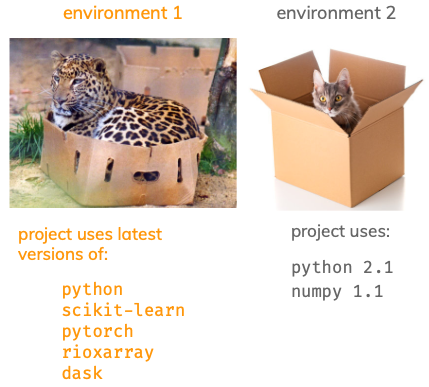
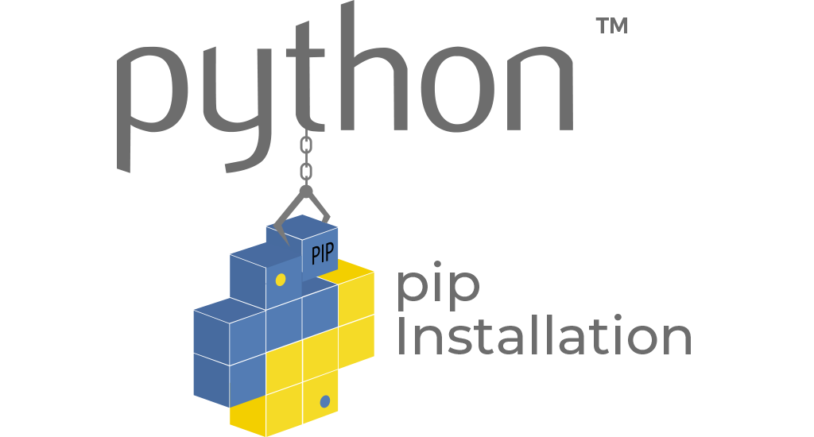

Conda environments
This hands-on lesson gives a brief introduction to Conda environments, focusing on practical usage. You can use this lesson as a standalone introduction to environments, ideally preceding the installation of the course-specific environment (see Setup section). The last section includes a table with the Conda commands used in this lesson for quick reference.
Learning objectives
By the end of this lesson, students will be able to:
- Describe what Conda environments are and their role in managing Python packages and dependencies
- Use standard Conda commands to list, activate, deactivate, create, and delete environments
- Build Conda environments and install packages using the command line
- Generate and edit a
.ymlfile with environment specifications to enhance project reproducibility
Environments: what and why
Environments are a way to keep the packages and Python versions you use for different projects organized.

The main reasons to create an environment for each of your projects are:
- To not interfere with your computer’s pre-installed Python
- Packages usually depend on other packages to work properly, this is called a package dependency. Dependencies across different packages need to be carefully managed and may potentially be different across projects.
- Reproducibility! Being able to share your code and what it needs to run it with others
Conda environments
Conda is an environment and package management system: it can both create and administer the environments and install compatible versions of software and their dependencies within an environment.
Environments created with Conda are usually called Conda environments. A Conda environment doesn’t need to be a Python environment, Conda can manage packages for any programming language.
Conda channels
Conda channels are the remote locations where packages are stored. Think of them as shops for getting packages. By default, packages are downloaded to your computer and updated from the conda default channel. But there are others! Conda-forge and bioconda are two popular ones. We can choose which Conda channel to install a package from.
pip
pip is a package management system only for Python. We can use it to install packages from the Python Package Index (PyPI). We can use pip inside a Conda environment when a package is not available from a Conda channel.

Hands-on environments
The following exercises will guide you through the basic commands to work with Conda environments. Unless otherwise specified, all the commands should be run in the command line. For a deeper dive after completing this introduction, check out the Conda documentation.
1. List environments
To list all the Conda environments available in your computer and their location we use:
conda env listThe output should look something like this:
# conda environments:
#
base * /Users/galaz-garcia/opt/anaconda3
eds220-env /Users/galaz-garcia/opt/anaconda3/envs/eds220-envNotice the file path next to the environment name. This is the absolute path to the environment’s installation directory on my local machine. This is where Conda has created the environment and stored the packages!
What is my currently active environment?
- When you run
conda env list, the asterisk next to the environment path indicates which environment is active. In the previous example, I am using the base Python environment. - The currently active environment also appears in the terminal in parenthesis at the beginning of each line, something like this:
(base) my-computer:MEDS-eds-220-course galaz-garcia$2. Create new Python environment
To create a new environment called test-env wiht a specific version of Python (in this case Python 3.11) we simply run:
conda create --name test-env python=3.11When you run this command, it will print out information about the packages that will be installed and ask you whether to proceed or not. Type y and press enter to create the environment and install the packages.
If we don’t include a Python version, the command conda create --name test-env python will install the most recent version of Python.
Check whether the new test-env environment is listed by Conda. Is it activated or not?
3. Activate environment
To activate the test-env environment we use the command
conda activate test-envVerify that test-env is now your current environment.
4. Packages information
To see which packages are installed within the currently active environment we run:
conda listThe output will be a long list that looks something like this:
# packages in environment at /Users/galaz-garcia/opt/anaconda3/envs/test-env:
#
# Name Version Build Channel
bzip2 1.0.8 h6c40b1e_6
pip 24.2 py312hecd8cb5_0
sqlite 3.45.3 h6c40b1e_0
[...]The name and version of each installed package in the environment appear in their respective columns. The ‘Build’ column shows a build string for each package. This string encodes important information about how the package was compiled, including any updates or changes made without altering the package version. It also reflects any compatibility or performance optimizations that were integrated during the build process.
For example, the same package with the same version might have different builds (and therefore different build strings) depending on whether it was installed on macOS, Windows, or Linux. This difference arises because the package may need to be compiled differently to optimize performance and ensure compatibility with each operating system.
The channel column shows the source from which the package was downloaded and installed. In this example the entries on this column are blank, signaling these packages were downloaded from the defeault Conda channel. We’ll see other channels appear in the next examples.
We can also request information about a specific package. For example, if we run
conda list pipwe obtain only the information about the pip package:
# packages in environment at /Users/galaz-garcia/opt/anaconda3/envs/test-env:
#
# Name Version Build Channel
pip 24.2 py312hecd8cb5_0 We can use the same command to verify whether a package is installed. For example, if we run
conda list numpywe will get empty columns:
# packages in environment at /Users/galaz-garcia/opt/anaconda3/envs/test-env:
#
# Name Version Build Channelbecause the numpy package is not intalled in this environment.
5. Searching for and installing packages
Suppose we want to install numpy in our currently active environment test-env. To do this we can simply use the command:
conda install numpySince we have not specified another channel, this command will install numpy from the default channel.
Verify that numpy is now installed.
Now, suppose we want to install rioxarray, this is a Python package for raster data analysis. This is a relatively new package, so it might not be available from the default Conda channels. A sensible measure would be to first look if rioxarray is available in the defaults channels, which we can do by running:
conda search rioxarrayThe output will look similar to
Loading channels: done
No match found for: rioxarray. Search: *rioxarray*
PackagesNotFoundError: The following packages are not available from current channels:
- rioxarray
Current channels:
- https://repo.anaconda.com/pkgs/main/osx-64
- https://repo.anaconda.com/pkgs/main/noarch
- https://repo.anaconda.com/pkgs/r/osx-64
- https://repo.anaconda.com/pkgs/r/noarch
To search for alternate channels that may provide the Conda package you're
looking for, navigate to
https://anaconda.org
and use the search bar at the top of the page.As stated, rioxarray is not available on the default channels for my Conda installation. Notice a couple of the channels it is seraching on are specific to macOS (my current operating system). The last two channels are actually channels for R packages. If we had tried to install rioxarray using conda install rioxarray we would have obtained an error message with similar information (you can try it if you want!).
We may have better luck searching for rioxarray in the conda-forge channel, which we can do like this:
conda search --channel conda-forge rioxarrayThe result will be a list of available versions and builds of this package in the conda-forge channel:
Loading channels: done
# Name Version Build Channel
rioxarray 0.0.3 py_0 conda-forge
rioxarray 0.0.4 py_0 conda-forge
rioxarray 0.0.5 py_0 conda-forge
[...]
rioxarray 0.16.0 pyhd8ed1ab_0 conda-forge
rioxarray 0.17.0 pyhd8ed1ab_0 conda-forge Do you see any versions of rioxarray with multiple builds?
Since we now know that we can find rioxarray in the conda-forge channel, we can go ahead and install it from this channel using the command
conda install --channel conda-forge rioxarrayYou’ll see a moving bar that says Conda is solving (the) environment - this is Conda doing its package management job! It means Conda is working on:
- finding the dependencies for the packages you are trying to install,
- finding versions of these dependencies that are compatible with each other,
- making sure these new packages are compatible with the packages already present in the environment,
- downgrade, upgrade, or remove packages as needed in the environment.
Overall, Conda tries to install what we need with the least disruption. Solving an environment can often take time but it is crucial so that the environment remains stable and functional.
- Check whether
pandasis installed in the environment. - Which channels were used to install dependencies for
rioxarray?
6. Deactivate environment
To deactivate our current environment and return to our base environment we simply run
conda deactivateVerify we are no longer in the test-env. What environment are we on?
7. Delete environment
Since this was a test environment, we can go ahead and delete all of it using the command:
conda remove --name test-env --allIt will ask you whether you want to proceed. Type y and press enter to go ahead and delete the environment.
We can run conda env list to verify the test-env does not exist anymore.
8. Create environment (one liner)
We can also create a new environment by specifying the package versions and channel priorities. For example, to install the numpy and rioxarray versions we previously had in a new environment called my-env we run:
conda create --name my-env rioxarray=0.17.0 numpy=1.26.4 --channel conda-forgeNotice we are explicitely requiring certain versions of our packages, and the --channel conda-forge option is asking Conda to prioritize getting the packages from conda-forge.
Take a look at the dependencies that were installed with these two packages.
9. Exporting an environment
One of the main goals of using an environment to manage the packages used in your project is being able to share the environment so that other people can rerun your code and reproduce your results.
“Sharing the environment” means sharing instructions that Conda can use to recreate the environment you have. These instructions are, basically, a list of the packages installed in the environment, their versions, which channels were used to install them, and, optionally, build specifications.
There are several ways of creating these instructions to reconstruct an environment depending on the level of cross-platform compatibility we are looking for. However, each of the following methods to export the environment specifications will generate a new YAML file. This file type with .yml extension is human-readable markup language that is commonly used for configuration in software applications.
Each of the commands for exporting the environment specifications will create a .yml file in our terminal’s current working directory. Remember you can use pwd (Mac & Linux) or echo %cd% (Windows CMD) on the command line to check which is your current working directory. If you need to change directories you can use cd navigation in the terminal.
The best practice is to have the environment.yml file in the directory that holds your project. This way, you can use version control on it and push it to your remote repository.
Platform and package specific
The first method to export the environment specifications is running
conda env export > environment.ymlThe environment.yml is the name of the YAML file that will have the environment specifications.
Open the environment.yml file that was generated, it will look similar to this excerpt:
name: my-env
channels:
- conda-forge
- defaults
dependencies:
- affine=2.4.0=pyhd8ed1ab_0
- attrs=24.2.0=pyh71513ae_0
[...]
- zlib=1.3.1=h87427d6_1
- zstd=1.5.6=h915ae27_0
prefix: /Users/galaz-garcia/opt/anaconda3/envs/my-envHere we can see the name of the environment, the channels used to install packages (in order of priority), and the package names, each with a version and build string. This ensures that the environment can be recreated exactly as it is on another system. This first method to export the environment specifications is the most detailed and it is both platform and package specific.
prefix line before sharing environment
Notice the last line in the environment.yml file, this prefix indicates the absolute path to the environment’s installation on your local machine.
You should delete the prefix line when sharing the environment file. Leaving it there is unnecessary and could cause confusion since it points to specific directroy in your local machine.
Cross-platform compatible
Our second method to export the environment specifications is to run
conda env export --from-history > environment_hist.ymlHere I named the file environment_hist.yml to not overwrite the previous environmnet.yml, that way you can compare both of them. Open the environment_hist.yml file, it will look similar to this (much shorter than the previous one):
name: my-env
channels:
- defaults
dependencies:
- numpy=1.26.4
- rioxarray=0.17.0
prefix: /Users/galaz-garcia/opt/anaconda3/envs/my-envAdding the --from-history option tells Conda to only include packages that we explicitely installed (in this case numpy=1.26.4 and rioxarray=0.17.0), omitting any dependencies that were automatically installed and channel information. This will create a minimal environment file that lists only the packages you explicitly installed, making it simpler and more portable for sharing with others. While this method ensures reproducibility of the core setup, Conda will resolve dependencies on its own and these might not be the same as your original environment.
environment.yml file
In section 5 we saw that the rioxarray package is available on the conda-forge channel, but not the defaults channel. The output of conda env export with the --from-history option only includes the defaults channel, so we wouldn’t be able to recreate the environment with that file as is. Remember the .yml file can be manually modified and we can edit it to include conda-forge as the first priority channel, followed by the defaults channel. Rememember to also delete the prefix line before sharing. The modified version of the --from-history output that will allow us to recreate the environment will be:
name: my-env
channels:
- conda-forge
- defaults
dependencies:
- numpy=1.26.4
- rioxarray=0.17.0Before moving to the last exercise, delete the environment.yml and environment_hist.yml files.
10. Importing an environment
For this last exercise, click here and download the eds220-env.yml file in this repository. Move to a directory for a mock project and navigate to that directory in the terminal.
To create an environment from specifications in a .yml file we run
conda env create --name eds220-env --file eds220-env.ymlThe --name option states how we want to name our environment (eds220-env in this case). If no --name option is given, Conda will name of the environment using the name field in the environment.yml file.
Verify that the new environment was created, activate it, and take a look at the installed packages.
Conda commands
The following table includes the commands covered in this lesson’s exercises. Check out Conda’s cheatsheet for more commands and tips.
| Command | What it does |
|---|---|
conda env list |
list available Conda environments |
conda create --name ENVNAME python |
create a new Python environment named ENVNAME |
conda remove --name ENVNAME --all |
delete ENVNAME environment |
conda activate ENVNAME |
activate environment |
conda deactivate |
deactivate active environment |
python -V |
print Python version installed in active environment |
conda list |
list installed packages in active environment |
conda list PKGNAME |
check if PKGNAME package is installed in active environment |
conda install PKGNAME |
install PKGNAME package in environment using environment channel priorities (generally just from defaults channel) |
conda install --channel CHANNELNAME PKGNAME |
install PKGNAME package in environment from from CHANNELNAME channel |
conda search PKGNAME |
search for PKGNAME package in environment’s channels |
conda search --channel CHANNELNAME PKGNAME |
search for PKGNAME package in CHANNELNAME channel |
conda env export > ENV.yml |
export environment specifications of currently active environmemt into ENV.yml file (includes all dependencies, buildstrings, and channels) |
conda env export --from-history > ENV.yml |
export environment specifications of currently active environmemt into ENV.yml file (only packages explicitely installed, no dependencies, buildstrings, or channels) |
conda env create --name ENVNAME --file ENV.yml |
create an environment named ENVNAME from specifications in ENV.yml file |